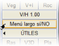
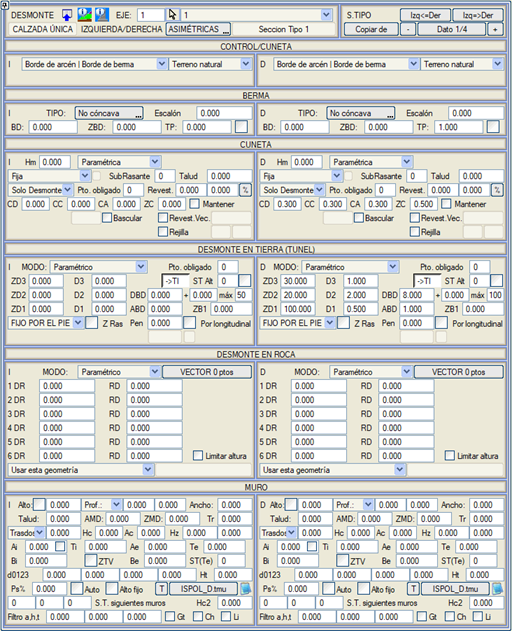
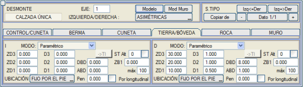

| |
|
YARMA ENKESİTİ
|
Bu menü, farklı yarma enkesitlerini çok kapsamlı bir şekilde tanımlamayı sağlar:
Genel Bilgiler
Kontrol Noktası ve Hendek Başlangıcı Kaplamalı Banket Hendekler Zeminde Yarma Geometrisi Parametrik Tanım
Kayada Yarma GeometrisiVektörel Tanım Yarma Topuğu ve Şev Başına Göre Şev Tanımı Zayıf Zeminde Yarma Alternatif Tip Kesit Gelişmiş Tanımlar Tünel ve Aç-Kapa Tünel için Yarma Kesitleri İstinat Duvarları Genel Bilgiler  [-] [Veri i/n] [+] düğmeleri aracılığıyla, [TİP KESİT, TESVİYE YÜZ.] menüsünde oluşturulan farklı tip kesitler arasında gezinmek veya her birine atanmış yarma verilerini değiştirmek mümkündür. [-] [Veri i/n] [+] düğmeleri aracılığıyla, [TİP KESİT, TESVİYE YÜZ.] menüsünde oluşturulan farklı tip kesitler arasında gezinmek veya her birine atanmış yarma verilerini değiştirmek mümkündür.[SİMETRİK/ASİMETRİK] düğmesi (basıldığında tuş değişir) ile, enkesitin her iki taraf için aynı geometriye mi yoksa farklı geometriye mi sahip olduğu beyan edilir. Eğer enkesit simetrik ise, sadece sağ taraf için veri tanımlamak yeterlidir. Sol taraf verileri, tanımlanmış olsun ya da olmasın, kullanılmaz. Eğer asimetrik bir enkesit seçilmişse, bazıları simetrik olsa bile enkesitin tüm elemanlarında veri tanımlanmalıdır. Bu durumda, genellikle bir taraf tanımlanır, [Sol -> Sağ] veya [Sol <- Sağ] düğmeleriyle kopyalanır ve diğer tarafta farklı olan ne varsa değiştirilir. [Şuradan Kopyala] düğmesi, mevcut yarma ve dolgu enkesitine, düğmeye basıldıktan sonra sıra numarası istenen mevcut herhangi başka bir enkesitin verilerini aktarmayı sağlar.  [Model], zemin ve kaya kesiti arasında ayrım yapıldığını dikkate alarak, enkesiti tanımlamak için girilebilecek parametreleri açıklar. [Model], zemin ve kaya kesiti arasında ayrım yapıldığını dikkate alarak, enkesiti tanımlamak için girilebilecek parametreleri açıklar.Tüm kısaltmalar (CA, CC, CD,...) ana diyalog kutusunda tanımlanmıştır. Gelişmiş veya özel yarma modları da işleyişlerini açıklayan bir modele sahiptir. Görüş palyesi ve şev tacı (kendi kilometre aralıklarına sahiptirler) hariç, geri kalan elemanlar tip kesite bağlıdır. Bu nedenle, iyi bir strateji, yaklaşık bir tip kesit sayısını belirlemek için projeyi derinlemesine incelemek ve bunların projenin boyuna ilerlemesiyle uyumlu olmasını sağlamaya çalışmaktır. Yan menüdeki [Uzun Menü EVET/hayır] düğmesi ile YARMA menüsünün gösterim şekli değiştirilir; ya tüm veriler bir arada (uzun): 
Ya da sekmelerle düzenlenmiş (kısa) şekilde, bu da daha fazla çizim alanı bırakır: 
|